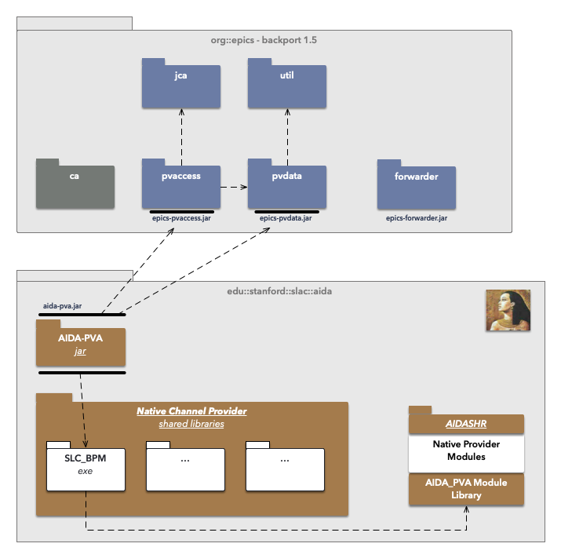

|
AIDA-PVA 2.0
AIDA-PVA is the latest version of the AIDA framework. Built on top of EPICS 7 it enables client applications to programmatically access and manage any device or database on the SLAC Network using simple channel names.
|
|
AIDA-PVA 2.0
AIDA-PVA is the latest version of the AIDA framework. Built on top of EPICS 7 it enables client applications to programmatically access and manage any device or database on the SLAC Network using simple channel names.
|
AIDA-PVA is the latest version of the AIDA framework. AIDA-PVA differs from AIDA classic by leveraging EPIC 7's PVAccess communications layer to transport the requests to AIDA-PVA servers and the responses back to AIDA-PVA clients.
AIDA-PVA offers unprecedented ease of use as it leverages the EPICS connection protocol, PVAccess, to standardize its namespace and streamline operations. It is easy to implement new Native Channel Providers as the framework removes the need for boilerplate code so developers can concentrate on the job of communicating with the back end systems. The capabilities and configurability of the framework have been extended, with greater flexibility in the types and complexity of arguments that can be passed, as well as dynamic channel configuration with pattern matching.
The integration with EPICS will allow clients that already use EPICS to leverage existing code to allow AIDA-PVA to coexist with other EPICS data sources.
This version of AIDA involves a complete rewrite of the AIDA framework from the ground up, and notably includes some changes to the AIDA norms and operations. The typical IN:STAN:CE//ATTRIBUTE tuple that was used to address devices in previous versions has been replaced with an addressing scheme that is fully aligned with EPICS. Making requests has been greatly simplified, although there are no longer any client libraries to help the client developer - example code not withstanding.
In order for the AIDA-PVA framework to function on legacy backend systems - including OpenVMS Alpha V8.3, with Java 1.5 and C98 - EPICS 7 had to be back-ported to these operating systems and JVM versions. As part of that effort a new component - the EPICS Forwarder - needed to be created to work around some platform limitations.
Finally, the AIDA service providers have been reimplemented, and rebranded AIDA-PVA Native Channel Providers, in this new framework and there are significant changes, in the way they integrate with the Native Provider Modules in AIDASHR, in the way they are deployed, and in the way they are launched.
For more information:
